I criteri di congruenza dei triangoli rettangoli
Due triangoli rettangoli hanno senz'altro l'angolo retto in comune, pertanto, per stabilire se sono congruenti, basta trovare altri due elementi che siano rispettivamente congruenti (e non tre come avviene per i triangoli in generale).
Teorema 3.3.5 (Primo criterio di congruenza tringoli rettangoli). Due triangoli rettangoli sono congruenti se hanno rispettivamente congruenti i due cateti. □.
Teorema 3.3.6 (Secondo criterio di congruenza tringoli rettangoli). Due triangoli rettangoli sono congruenti se hanno congruenti rispettivamente un cateto e un angolo acuto corrispondenti. □.

Teorema 3.3.7 (Terzo criterio di congruenza tringoli rettangoli). Due triangoli rettangoli sono congruenti se hanno congruenti rispettivamente l'ipotenusa e un angolo acuto. □.
Teorema 3.3.8 (Quarto criterio di congruenza tringoli rettangoli). Due triangoli rettangoli sono congruenti se hanno congruenti rispettivamente l'ipotenusa e un cateto.
Dim. Il triangolo B''BC è isoscele sulla base B''B, quindi BC ≅ B'C per l’ipotesi 3 e B'C' ≅ B''C per costruzione, quindi BC ≅ B''C per la proprietà transitiva.
Quindi B̂ B̂''.
I triangoli rettangoli ABC e AB''C hanno:
l’ipotenusa congruente, BC ≅ B''C, per ipotesi;
un angolo acuto congruente, B̂ ≅ B̂'', per la deduzione precedente.
Essi sono perciò congruenti per il terzo criterio di congruenza dei triangoli rettangoli.
Il triangolo ABC è congruente al triangolo AB''C che è congruente, per costruzione, al triangolo A'B'C'. Per la proprietà transitiva:
ABC ≅ A'B'C' □